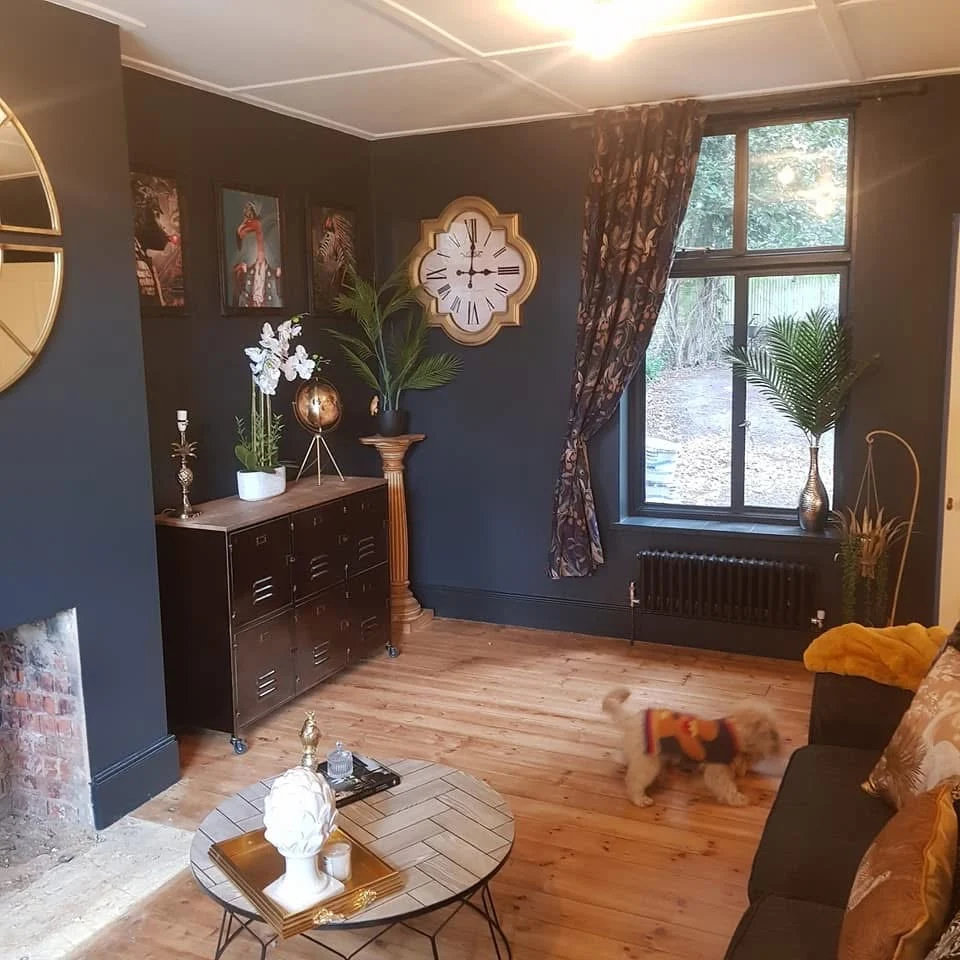

WORTHING · HOME IMPROVEMENTS
Your privacy.
Clear information.
Information about making an enquiry through this website.
Your enquiry information
The enquiry form opens WhatsApp with a prepared message. You review it and decide whether to send it. The website does not submit your details to a website database.
Your name, phone number, selected service, postcode and project details are used to respond to your enquiry and discuss the requested work. Please do not include sensitive personal information.
WhatsApp and the website host process information under their own policies. This website adds no advertising or analytics cookies. Correspondence may be retained where needed to manage the work or meet legal obligations.
For questions about your enquiry information or a deletion request, call 07752 594197. Goring All Trades, 132 Limbrick Lane, Worthing.